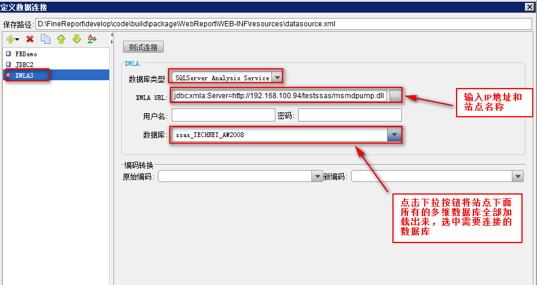

XMLA数据连接 |
顶( ) |
| 最后更新日期： | 有 人发表评论 (点击查看) |
1. 描述
多维数据库（Multi Dimensional Database,MDD），顾名思义，就是指将数据存储在多个维度中，简单来说，就是将数据存放在一个n维数组中，而不是像关系数据库那样以记录的形式存放。因此它存在大量稀疏矩阵，人们可以通过多维视图来观察数据。多维数据库增加了一个时间维，与关系数据库相比，它的优势在于可以提高数据处理速度，加快反应时间，提高查询效率。
2. 操作步骤
FineReport提供了的方式来与多维数据库进行连接，建立桥梁，通过该桥梁，FineReport可以轻松获取到多维数据库中的数据转换为二维表进行模板制作，数据分析。
2.1 导入相关jar包
在使用方式连接多维数据库之前，首先要导入2个与XMLA数据连接相关的jar包：olap4j.jar和olap4j-xmla.jar。
jar放在%FR_HOME%\WEB-INF\lib路径下面。
2.2 新建数据连接
打开设计器，点击，进入定义数据连接对话框，点击按钮添加一个数据连接，如下图：
2.3 数据连接参数配置
FineReport多维数据库XMLA数据连接支持市场上主流的SQLServer Analysis Services、Oracle Essbase和SAP HANA等等数据库类型，下面我们一一讲解各类型多维数据库的连接方式。
- SQLServer Analysis Services
SQLServer Analysis Services简称为SSAS，是指在内置计算支持的单个统一逻辑模型中，设计、创建和管理包含来自多个数据源（如关系数据库）的详细信息和聚合数据的多维结构。
XMLA数据连接参数配置界面上的选择SQLServer Analysis Services，在URL输入该数据库所在站点地址，用户名及密码，然后点击标签后面的下拉选项，FineReport会自动将该站点下面的所有多维数据库加载显示在下拉列表中，选中需要连接的数据库即可，如下图：

注：上面的XMLA URL连接的是直接通过IIS发布的站点。
点击即表示连接成功。
- Oracle Essbase
选择Oracle Essbase，在URL输入该数据库所在站点地址，用户名及密码，然后点击标签后面的下拉选项，FineReport会自动将该站点下面的所有多维数据库加载显示在下拉列表中，选中需要连接的数据库即可，如下图：

- SAP HANA
选择SAP HANA，在URL输入该数据库所在站点地址，用户名及密码，然后点击标签后面的下拉选项，FineReport会自动将该站点下面的所有多维数据库加载显示在下拉列表中，选中需要连接的数据库即可，如下图：
|
|
|
文明发言，用心评论
|
应用此篇文章，您:
不费力
研究了一会 琢磨了好久 |
||
|
CopyRight@2014
> 帆软软件有限公司 苏ICP备14031611号-1 |